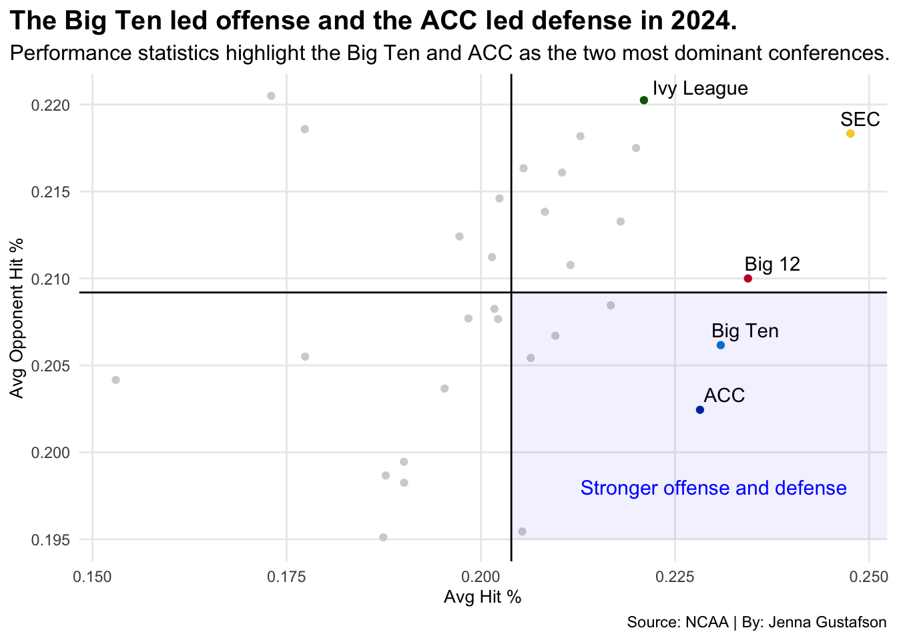

Is the Big Ten the most dominant conference in NCAA DI Volleyball?
ncaa
sports
volleyball
Author
Jenna Gustafson
Published
May 4, 2025
Over the past few seasons of Division I volleyball, there is a noticeable trend of powerhouse programs that have consistently held their position in the national rankings. Programs like Texas, Wisconsin and Nebraska have had a powerful presence near the top and prove their sustained excellence.
There is typically a majority of Big Ten teams that hold their places within the top 20. They also have a strong number of teams in the NCAA’s volleyball tournament every year with numerous Big Ten teams selected to compete.
Does this mean the Big Ten dominates Division I volleyball?
Measuring RPI is a valid way of displaying the toughness of level of competitiveness teams face: that translates to being a good team.
Code
library(tidyverse)library(gt)library(patchwork)library(ggrepel)RPI <-read_csv("newRPI.csv")newRPI <- RPI |>mutate(Team =gsub("(AQ)", "", Team, fixed=TRUE) )teamrpi <- newRPI |>mutate(Team =gsub("(AQ)", "", Team, fixed=TRUE) ) |>group_by(Team) |>summarise(avgrpi =mean(Adj.RPIValue, na.rm=TRUE), avgrank =mean(`Adj.RPI Rank`, na.rm=TRUE) ) |>ungroup() |>top_n(20, wt=-avgrank) |>arrange(avgrank) teamrpi |>gt() |>cols_label(avgrpi ="Average RPI",avgrank ="Average Rank" ) |>tab_header(title ="The Big Ten's strength in representation and lack of RPI average.",subtitle ="Even though four of the top five teams with the highest average RPI's are part of the SEC or ACC, the Big Ten is still proving to be a powerful conference with six teams within the top 20. " ) |>tab_style(style =cell_text(color ="black", weight ="bold", align ="left"),locations =cells_title("title") ) |>tab_style(style =cell_text(color ="black", align ="left"),locations =cells_title("subtitle") ) |>tab_source_note(source_note =md("**By:** Jenna Gustafson | **Source:** NCAA") )|>tab_style(locations =cells_column_labels(columns =everything()),style =list(cell_borders(sides ="bottom", weight =px(3)),cell_text(weight ="bold", size=12) ) ) |>opt_row_striping() |>opt_table_lines("none") |>fmt_percent(columns =c(avgrpi),decimals =1) |>tab_style(style =list(cell_fill(color ="#C5050C"),cell_text(color ="white") ),locations =cells_body(rows = Team =="Wisconsin") ) |>tab_style(style =list(cell_fill(color ="#E41C38"),cell_text(color ="white") ),locations =cells_body(rows = Team =="Nebraska") ) |>tab_style(style =list(cell_fill(color ="#C28E0E"),cell_text(color ="white") ),locations =cells_body(rows = Team =="Purdue") ) |>tab_style(style =list(cell_fill(color ="#7A0019"),cell_text(color ="white") ),locations =cells_body(rows = Team =="Minnesota") ) |>tab_style(style =list(cell_fill(color ="#154733"),cell_text(color ="white") ),locations =cells_body(rows = Team =="Oregon") ) |>tab_style(style =list(cell_fill(color ="#001E44"),cell_text(color ="white") ),locations =cells_body(rows = Team =="Penn St.") )
The Big Ten's strength in representation and lack of RPI average.
Even though four of the top five teams with the highest average RPI's are part of the SEC or ACC, the Big Ten is still proving to be a powerful conference with six teams within the top 20.
Team
Average RPI
Average Rank
Texas
72.1%
3.6
Louisville
72.2%
4.4
Wisconsin
70.5%
5.2
Pittsburgh
71.1%
5.6
Kentucky
68.4%
7.4
Nebraska
69.2%
10.2
Creighton
66.6%
13.2
Baylor
65.2%
15.8
Georgia Tech
64.6%
18.8
BYU
64.0%
19.0
Florida
64.3%
19.2
Purdue
64.7%
19.2
Minnesota
63.9%
19.6
Marquette
64.2%
19.8
Oregon
64.5%
21.4
Western Ky.
62.7%
24.0
Penn St.
64.7%
24.4
Florida St.
62.0%
24.8
Rice
61.2%
33.2
Kansas
61.4%
38.8
By: Jenna Gustafson | Source: NCAA
However, averaging the RPI’s and ranks from the last five seasons and placing them in descending order based on their average rank, only one Big Ten team is within the top five. That being said, there are six teams in total from the Big Ten within the top 20, and there are four or less teams from the ACC or SEC. Like all sports, teams will go through rough years. Wisconsin proved that between the 2023-2024 seasons. They lost seven games in 2024 but were rock solid in 2023 with only four.
While the Big Ten teams are consistent within the top 20 but don’t lead the way, that is the same with their win percentages throughout the last five seasons.
It can be argued that the Big 12 was strong because they had Texas before they shifted over to the SEC, but that still doesn’t change much for the Big Ten. In the past five seasons, the Big Ten never was never second place in finishing with the highest win percentage. It was always the SEC, ACC and Big 12.
But performance dictates the overall win percentages. The ACC finished second in 2024 and the Big Ten right under them. The SEC led the way with the highest winning percentage.
Code
ncaavb <-read_csv("ncaa_womens_volleyball_teams_2024.csv")cleanncaavb <- ncaavb |>select(conference, hit_pct, opponent_hit_pct) |>group_by(conference) |>summarise(avghitpct =mean(hit_pct), avgopphitpct =mean(opponent_hit_pct) )bigten <- cleanncaavb |>filter(conference =="Big Ten")sec <- cleanncaavb |>filter(conference =="SEC")bigtwelve <- cleanncaavb |>filter(conference =="Big 12")acc <- cleanncaavb |>filter(conference =="ACC")ivyleague <- cleanncaavb |>filter(conference =="Ivy League")ovc <- cleanncaavb |>filter(conference =="OVC")bigeast <- cleanncaavb |>filter(conference =="Big East")theamerican <- cleanncaavb |>filter(conference =="The American")wcc <- cleanncaavb |>filter(conference =="WCC")ggplot() +geom_point(data= cleanncaavb, aes(x= avghitpct, y= avgopphitpct), color ="lightgrey") +geom_point(data= bigten, aes(x= avghitpct, y= avgopphitpct), color ="#0088CE") +geom_point(data= sec, aes(x= avghitpct, y= avgopphitpct), color ="#FBCE28") +geom_point(data= bigtwelve, aes(x= avghitpct, y= avgopphitpct), color ="#C41230") +geom_point(data= acc, aes(x= avghitpct, y= avgopphitpct), color ="#013ca6") +geom_point(data= ivyleague, aes(x= avghitpct, y= avgopphitpct), color ="#006600") +theme_minimal() +geom_vline(xintercept =0.2039252) +geom_hline(yintercept =0.2091922) +geom_text_repel(data=bigten, aes(x=avghitpct, y=avgopphitpct, label=conference) ) +geom_text_repel(data=ivyleague, aes(x=avghitpct, y=avgopphitpct, label=conference) ) +geom_text_repel(data=acc, aes(x=avghitpct, y=avgopphitpct, label=conference) ) +geom_text_repel(data=bigtwelve, aes(x=avghitpct, y=avgopphitpct, label=conference) ) +geom_text_repel(data=sec, aes(x=avghitpct, y=avgopphitpct, label=conference) ) +annotate("rect", fill ="blue", alpha =0.06, xmin =0.2039252, xmax =Inf,ymin =0.195, ymax =0.2091922) +geom_text(aes(x=.230, y=.198, label="Stronger offense and defense"), size=4, color="blue") +labs(title="The Big Ten led offense and the ACC led defense in 2024.", subtitle="Performance statistics highlight the Big Ten and ACC as the two most dominant conferences.", x="Avg Hit %", y="Avg Opponent Hit %",caption ="Source: NCAA | By: Jenna Gustafson") +theme_minimal() +theme(plot.title =element_text(size =15, face ="bold"),axis.title =element_text(size =10), plot.subtitle =element_text(size=12), panel.grid.minor =element_blank(),plot.title.position ="plot" )

The ACC and the Big Ten are relatively close to each other. The ACC is proving a much stronger defensive rating, that can then be translated into them holding off other teams from being able to score. However, the Big Ten is more aggressive in areas as to actually getting the points. Both are important elements of the game that either of which can impact the overall outcome.
While the Big Ten has not clearly and definitively proved to be the best conference, they have proved through their averages that they are consistent. That does not discredit them in any way from being a very powerful conference. Nonetheless, the playing field for Division I volleyball is fairly equal, changing as teams switch conferences.
The Big Ten proves consistency and high talent with great performing teams. The statistics may go to show that certain conferences are more powerful in certain areas, resulting in their averages and percentages to increase.